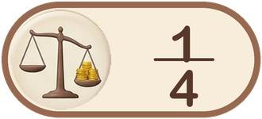
pays a quarterMishnah 1: The ox, the cow and the calf: before or after?
When it is unclear whether the calf was lost because of the goring, the owner pays a quarter of its value, half of the disputed half.
The case
- An ox that is accounted harmless gored a cow and killed it. A dead newborn calf lies beside her.
- It is unclear whether the calf was born before the goring or lost because of it.
What he pays
- For the cow: half damages, the usual law for a harmless animal.
- For the calf: if the goring caused the miscarriage he would owe half damages for it; if it was lost earlier, nothing. The mishnah splits the doubt: a quarter damages.
The reverse case
- A cow gored an ox, and a living newborn is at her side. The gored owner collects up to half damages from the cow, and a quarter of the damages from the newborn if more is owed.
- An example: the ox was worth 500, so half damages is 250. The cow is worth 200, so he collects 200 from her and 25 from the newborn.
Why split the money?
- When it is a doubt about whose money it is, the mishnah has the two sides split it. The usual rule is that the one who wants the money must bring proof (3:11); here the doubt is split instead. The Mishnah is a collection of laws and traditions, not a code without contradictions.
Halakha
- This mishnah follows the view of Sumchus that money in doubt is split. The Gemara cites the Sages, who say the one who wants the money must bring proof, and the halakha follows the Sages: if he cannot prove that the goring caused the loss of the calf, nothing is paid for the calf.
The doubt about the calf
| If the calf was lost... | He pays for the calf |
|---|---|
| because of the goring | half damages |
| before the goring | nothing |
| unknown (the mishnah's case) | a quarter damages (the split) |
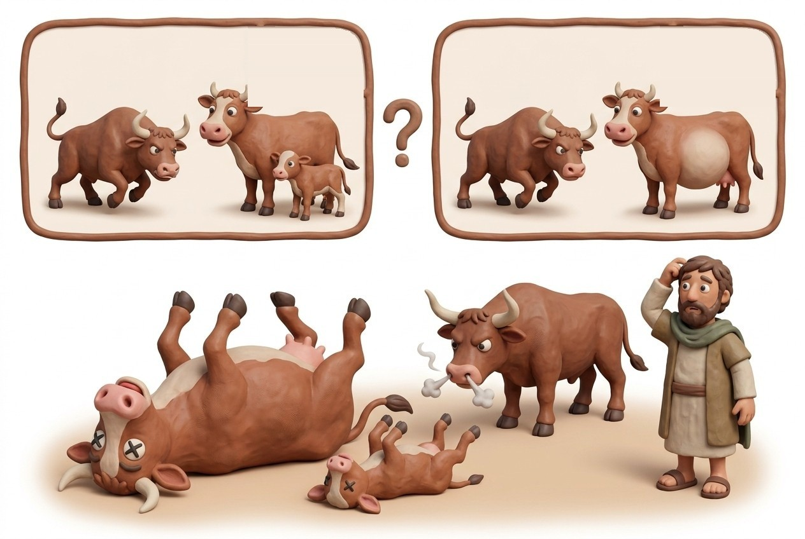

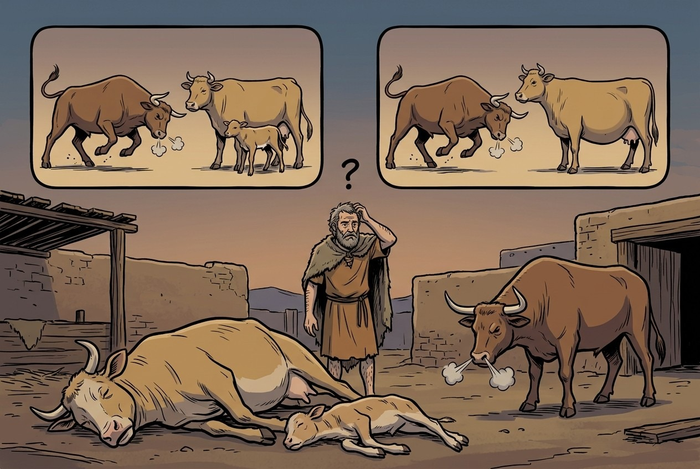
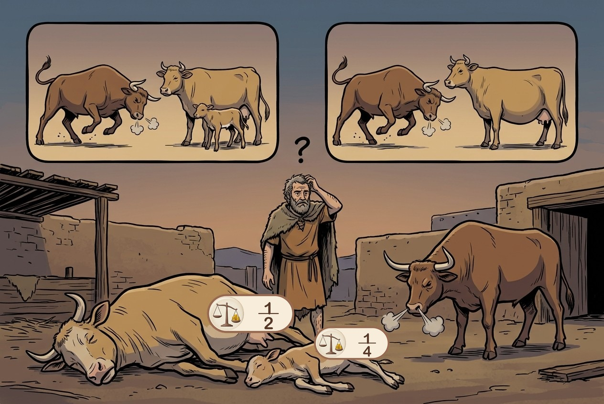
Mishnah 2: Pots and produce in someone else's courtyard
If you bring your things into a courtyard without permission, the householder is not liable for damage to them. With permission, he is.
Without permission
- A potter brought pots into a householder's courtyard without permission and the cattle broke them: the householder is not liable.
- If the cattle were injured by the pots, the owner of the pots is liable.
- This is trespassing: the householder can say, I never gave you permission.
With permission
- If he brought them in by permission and the cattle broke them, the owner of the courtyard is liable. [By giving permission he is taken to have accepted to guard them.]
- Likewise, if his things injured the householder's cattle, the visitor is exempt, since guarding them is the householder's job.
Produce
- The same rules apply to a man who brought produce that the cattle ate.
Halakha
- The householder is liable for what his cattle do to the visitor's things only if he accepted to guard them. The halakha follows Rabbi (5:3).
Kehati's notes
- If the cattle ate so much of the produce that they died, the owner of the produce is exempt, since the animal should not have eaten so much.
Who pays?
| Situation | No permission | With permission |
|---|---|---|
| The householder's cattle damage the visitor's goods | Householder is exempt | Householder pays |
| The visitor's goods injure the householder's cattle | Visitor pays | The visitor is exempt (the householder guards them) |
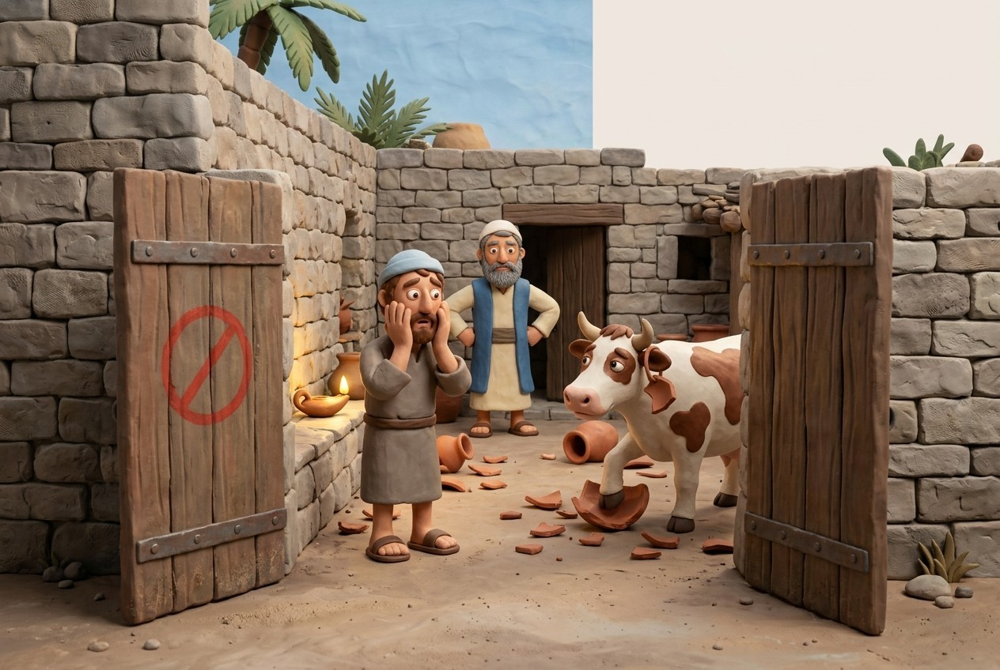
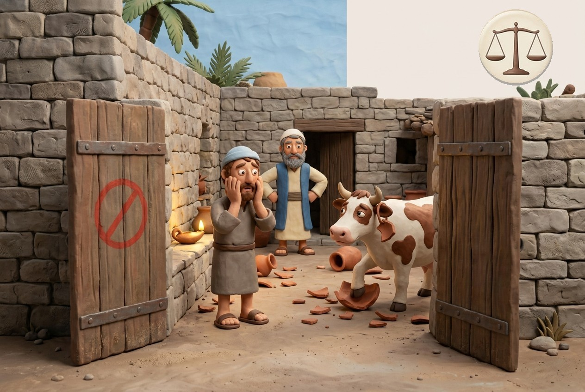
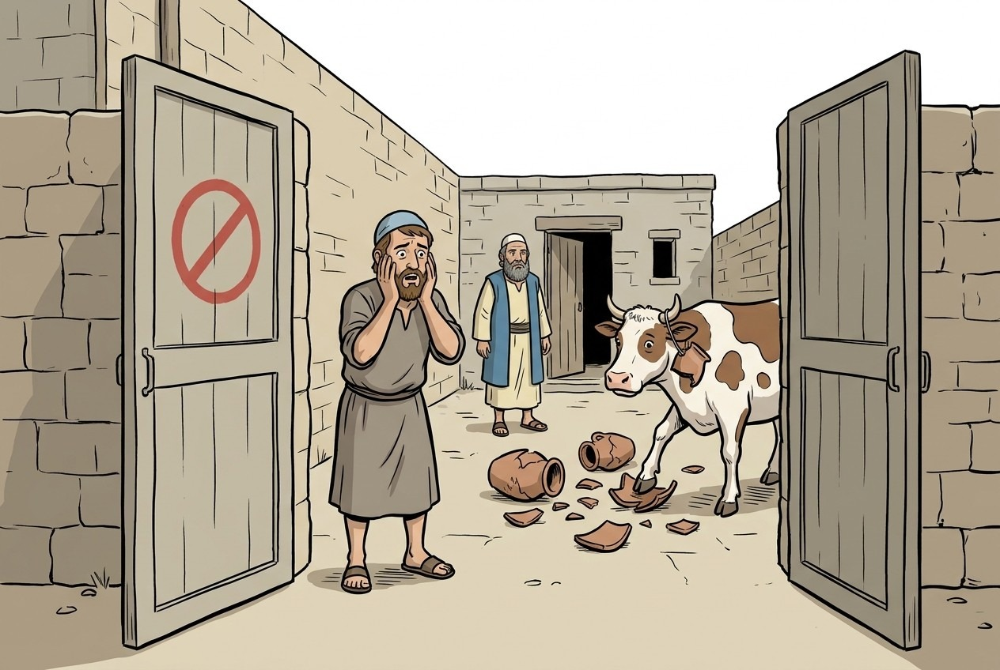
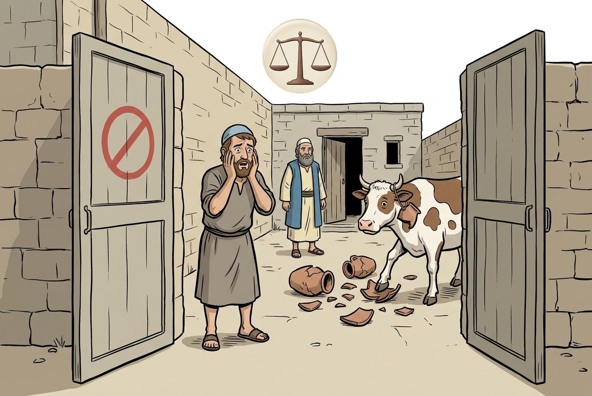
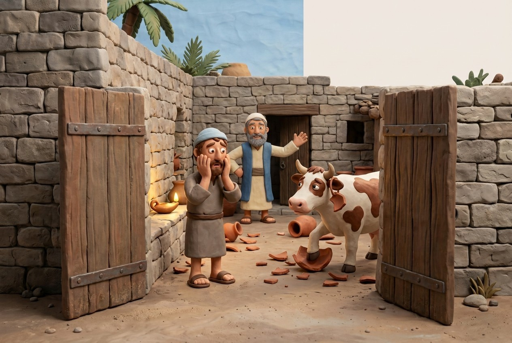
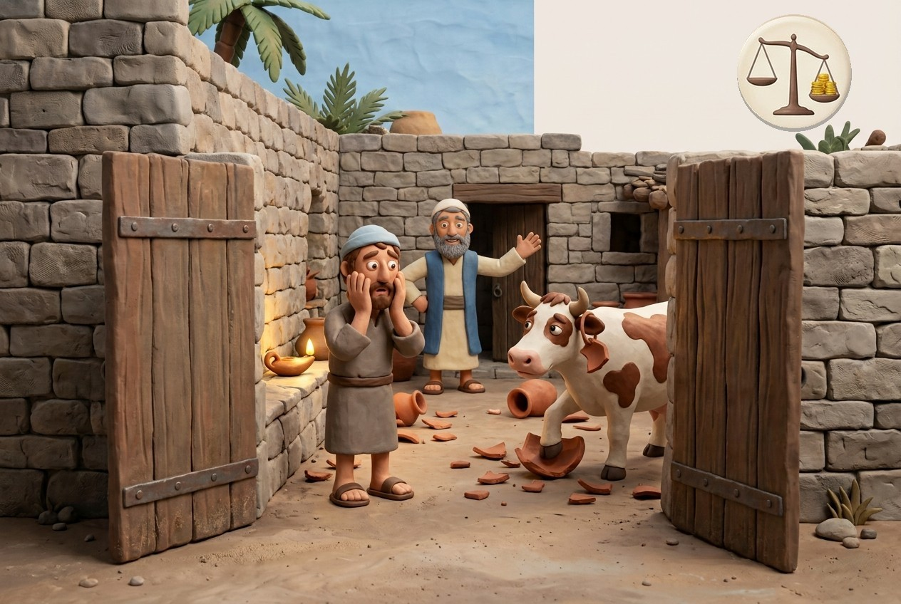
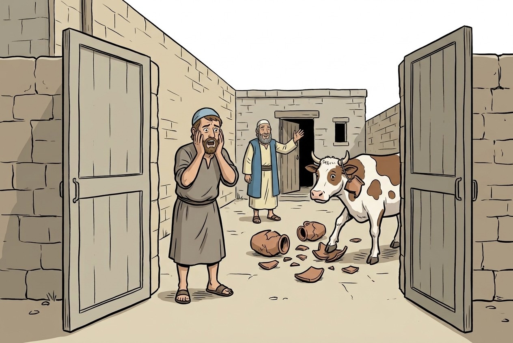
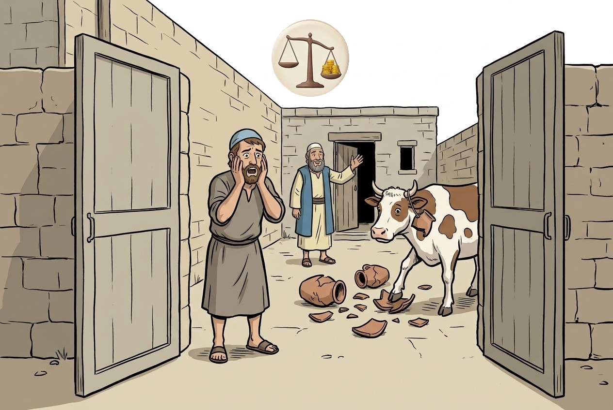
Mishnah 3: A man brings his ox into a courtyard
The same rules as the last mishnah, applied to a visiting ox, plus a cistern and the view of Rabbi.
Without permission
- If the householder's ox gored the visiting ox, or his dog bit it, the householder is not liable.
- If the visiting ox gored the householder's ox, its owner is liable.
- If it fell into the cistern and polluted its water, he is liable.
- If it fell in and killed the householder's father or son, the ox's owner pays the ransom price (Exodus 21:30).
With permission
- The owner of the courtyard is liable.
Rabbi's view
- Rabbi (Rabbi Judah Hanasi): the householder is liable only if he agreed to watch over it. Letting someone enter does not by itself accept responsibility for his belongings. The first view holds that it does.
Halakha
- The halakha follows Rabbi: letting someone in does not make the householder liable for his things; only if he accepted to guard them.
Kehati's notes
- The ox that fell into the cistern and killed the householder's father or son: the Gemara speaks of an ox that was an attested danger to fall on people. It is exempt from death, since it did not intend to kill, but its owner pays the ransom (kofer)the kofer (ransom).
- The mishnah says "his father or son" only as an example; the same holds for any other person. Kehati gives the view that Rabbi Yose HaGelili and Rabbi Tarfon, who hold that damage in the injured party's domain is paid in full, are the source for a full kofer here.
Mishnah 4: An ox or a man strikes a woman and she miscarries
A man who causes a miscarriage pays for the offspring; an ox's owner does not. (This mishnah deals with a sensitive subject; the picture below is a diagram only.)
Who pays
- An ox aimed at another ox and struck a woman, and she miscarried: its owner does not pay for the offspring.
- A man who aimed at another man and struck a woman: he pays for the offspring.
- Exodus 21:22 speaks of men fighting, so the law does not apply to an ox.
How the value is set
- First view: they assess the woman's value before she gave birth and after.
- Rabban Shimon ben Gamaliel: a woman is worth more after giving birth, since childbirth was dangerous, so that cannot work. Instead they assess what the offspring itself would be worth.
- The payment goes to the husband, or to his heirs if she has no husband.
- The Gemara limits Rabban Shimon ben Gamaliel's point to a woman giving birth for the first time, since that is dangerous. For one who has given birth before he too would assess her value before and after.
No penalty
- If she was a freed bondwoman or a convert, no penalty is incurred. Two explanations: there is no legal father to collect, or the husband has no heirs.
Kehati's notes
- The Gemara teaches that the ox is exempt even if it aimed at the woman, because the payment for offspring is only for a person ("men fighting").
- A freed bondwoman or convert: the mishnah speaks of a woman married to a convert or freed slave who died with no heirs. The payment has no owner, so the one who damaged keeps it. Two Gemara views (Rabba, Rav Chisda) differ on when the injury happened.
Mishnah 5: The pit
Whoever digs a pit is liable if an animal falls in and dies, but only if the pit is ten handbreadths deep.
Where it applies
- This is the second archetypal cause of damage (Exodus 21:33-34). A pit dug in a private domain opening to the public, or the reverse, or one private domain opening into another: he is liable.
- If he digs it in the public domain and an ox or donkey falls in and dies, he is liable.
- The one exception: someone entered his private land without permission and fell in.
Any hole
- It makes no difference whether it is a pit, trench, cavern, ditch or channel.
- Why does the Torah say pit? To teach the depth: ten handbreadths, about a yard, which is deep enough to cause death.
Shallower than ten
- If an animal falls in and dies, he is not liable, since it is an accident.
- If the animal is only injured, he is liable for full damages, since even a shallow hole can injure.
Kehati's notes
- It is judged by where the opening is, not where the bottom lies. A pit dug in a private domain with its opening to the public, or the reverse, makes him liable.
- The Gemara disputes whether the pit's liability is only when the animal dies from the foul air of the pit or also when it dies from the blow of the fall. The halakha follows Shmuel: also from the blow. So even a pit full of pillows or straw makes the digger liable.
- The same for a mound ten handbreadths high in the public domain: if an animal strikes it and dies, he is liable; if lower, he is exempt for a death but pays full damages for an injury.
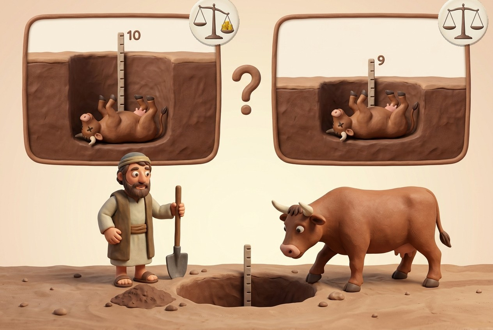
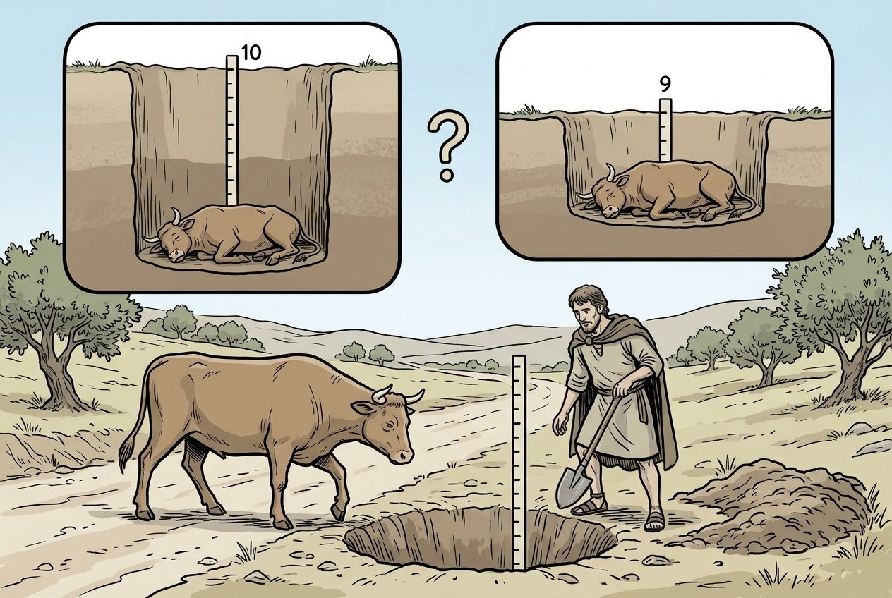
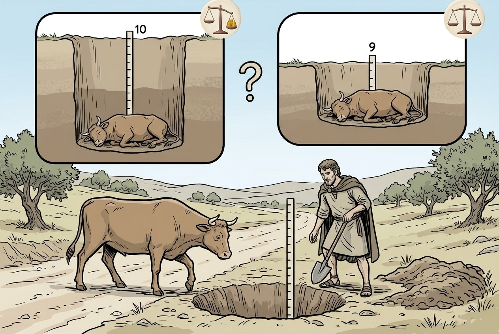
Mishnah 6: The pit: partners, covers and what falls in
The last partner to leave the pit uncovered is liable. Then a series of limits.
Partners and covering
- Two partners own a pit. One passed it and did not cover it, then the other also did not: the second is liable. Even if the first covered it and the second found it open and did not cover it, the second is liable.
- If it was properly covered and an ox or donkey still fell in and died, he is not liable.
The sound of digging
- An animal frightened by the sound of digging and falling in forward: the owner is liable. Backward: not liable.
- Kehati: "backward" means it fell outside, behind the pit; then the damage did not come from the pit itself but from the sound, which is only an indirect cause (gerama).
The load, and who falls
- Trappings (the yoke and plough of an ox, the saddle of a donkey) that break: liable for the animal, exempt for the trappings.
- A deaf, insane or young ox falling in: the owner is liable. A clever ox that falls by day is exempt, since it could see and be careful, and that is an accident. An ox walking at night is not so.
- A person (boy, girl, slave or bondwoman) who falls in: the owner is not liable. The verse says "ox" and not a person.
Kehati's notes
- A cover counts as proper only if it can stand up to ordinary wind and weight; one that cannot is as if he did not cover it.
Rulings about the pit
| What happened | Pit owner pays? |
|---|---|
| Two partners; the last one left it uncovered | The last one, yes |
| It was properly covered and an ox fell in and died | No |
| Animal frightened by the digging, falls forward | Yes |
| Animal frightened by the digging, falls backward | No |
| An animal's trappings break | No (yes for the animal) |
| A deaf, insane or young ox falls in | Yes |
| A person falls in | No |
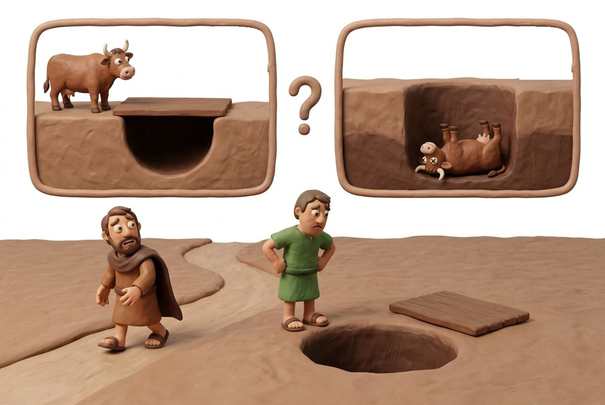
 123
123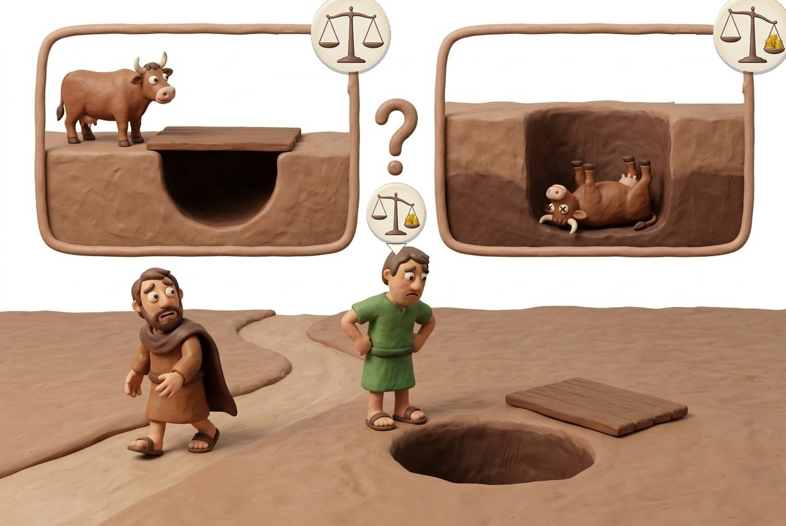
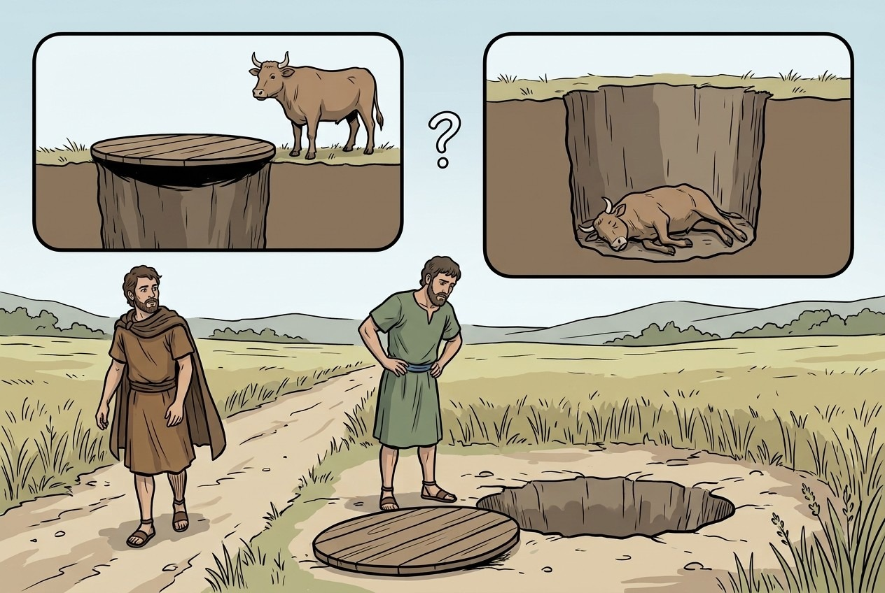
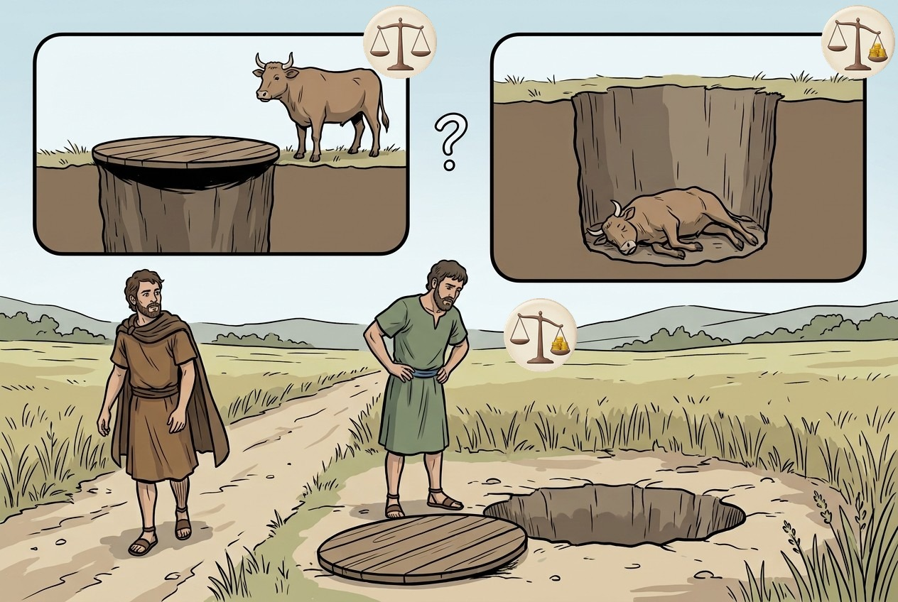
Mishnah 7: An ox is just an example
For eight laws the Torah says ox, but the rule applies to all animals, including wild animals and birds.
The list
- Falling into a pit; keeping away from Mount Sinai (Exodus 19:13); two-fold restitution (Exodus 22:3, 8); lost property (Exodus 23:4, Deuteronomy 22:1); unloading (Exodus 23:5); muzzling (Deuteronomy 25:4); diverse kinds (Leviticus 19:19, Deuteronomy 22:10); the Sabbath (Exodus 20:10, Deuteronomy 5:14).
Why does it say ox or donkey?
- The Torah spoke of prevailing conditions: oxen were the most frequently used animals.
Halakha
- Kilayim (plowing with two species): by the Torah, one is liable only if plowing and leading with two kinds one of which is pure and one impure, such as an ox and a donkey. The Rabbis forbade every two kinds.
Chapter summary
Draft for review. The outlines are in our own words, from the mishnah, Kehati and R. Kulp.
Key principles
- An animal accounted harmless (tam)tam (harmless) that does damage: its owner pays half damages, and the payment cannot exceed the value of the animal itself. 5:1
- When it is unclear whether a loss was caused by the goring, the money in doubt is split: the owner pays half of the half he might owe, a quarter damages. The Mishnah here follows Sumchus (money in doubt is split), not the rule of 3:11 that the claimant must bring proof. The halakha follows the Sages: nothing is paid unless the claimant proves it (Kehati). 5:1
- Someone who brings his belongings into another person's property without permission is liable if they cause damage there, and gets nothing if they are damaged there. The householder can say: I never gave you permission (trespassing). 5:25:3
- With permission, the mishnah says the householder is liable (he is taken to have accepted to guard). The halakha follows Rabbi (5:3): only if he accepted to guard. If the visitor's things injure the householder's cattle with permission, the visitor is exempt. 5:25:3
- A person who causes a miscarriage pays for the offspring, to the husband (or his heirs). An ox's owner does not, because Exodus 21:22 speaks of men fighting. 5:4R. Kulp cautions that this exemption is not a blanket statement about abortion.
- The pit (bor)The bor (pit) is the second of the four archetypal causes of damage (avot nezikin)avot nezikin (archetypal causes of damage). Whoever digs or uncovers a pit, in a private or public domain, is liable if an animal falls in and dies. The same holds for any hole (trench, cavern, ditch, channel). 5:5
- A hole counts as a pit if it is ten handbreadths (tefachim, about a yard) deep, the depth that can cause death. Shallower: no liability for a death, but full damages for an injury. 5:5
- If a pit has two owners, the last one to leave it uncovered is liable. If it was properly covered and an animal still fell in, he is not liable. 5:6
- Pit liability is limited to the animal itself: not the load or trappings, and not a person who falls in, even a child or a slave. This is learned from Exodus 21:33, 'an ox, and not a person; an ass, and not trappings'. A clever ox that falls by day is exempt (an accident); a deaf, insane or young ox, or an ox that falls at night, is not. 5:6
- 'Ox' in the Torah is an example. For eight laws, including falling into a pit, the rule applies to every animal, wild animals and birds too. The Torah says ox because oxen were the most commonly used animals. 5:7
Key terms
- tam תם 5:1
- An animal 'accounted harmless'. If it gores, its owner pays half damages, up to the animal's own value.
- half damages, quarter damages חצי נזק, רביע נזק 5:1
- Half damages is the payment for harm done by a tam. A quarter damages is half of half damages: the share the mishnah awards when half of the half is in doubt.
- without permission שלא ברשות 5:25:3
- Entering another person's property without his permission (trespassing). In 5:2-5:3 this decides who is liable.
- ransom כופר 5:3
- The payment an ox's owner makes to the family when his ox kills a person (Exodus 21:30). In 5:3 it also applies when the ox kills someone by falling into a cistern.
- av nezikin (archetypal cause of damage)archetypal cause of damage (av nezikin) אב נזיקין 5:5
- One of the four archetypal causes of damage listed in the first mishnah of the tractate. The pit (bor)The bor (pit) is the second.
- pit בור 5:55:6
- Exodus 21:33-34: one who opens or digs a pit and does not cover it, and an ox or donkey falls in, pays the owner of the animal and keeps the carcass.
- handbreadth (tefach)tefach (handbreadth) טפח 5:5
- A measure of length. Ten handbreadths, about a yard, is the depth of a pit that can cause death.
Key debates
Does permission to enter mean the owner is watching the visitor's things? 5:3
By letting him in, the householder implicitly accepts responsibility for his belongings, so he is liable if they are damaged.
Letting someone in is not accepting responsibility; the householder is liable only if he explicitly agreed to watch over them. Otherwise the visitor is still responsible for his own things.
How is the offspring valued? 5:4
Assess the woman's value before the pregnancy and after; the difference is the payment.
A pregnant woman is worth less, since childbirth was dangerous, so that method cannot work. Instead assess what the offspring itself would have been worth.
Mishnah against mishnah: who has to prove it? 5:1
As Kulp describes it, the burden of proof is on the claimant, so with no proof he gets nothing.
Where it is unclear, the two sides split the money. Kulp: this shows the Mishnah is not a law book without contradictions but a collection of laws and traditions from which a capable judge could decide.